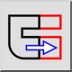
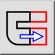

Menü: Modifizieren > Strecken
Tastenkürzel: S, S
Kommandos: stretch | ss
Werkzeugleiste / Symbol:
 

Menü: Modifizieren > Strecken
Tastenkürzel: S, S
Kommandos: stretch | ss
Beschreibung:
Streckt Konturen. Dies kann auch als Verschiebung aller Endpunkte in einem
rechteckigen Bereich beschrieben werden.

Vorgehensweise: